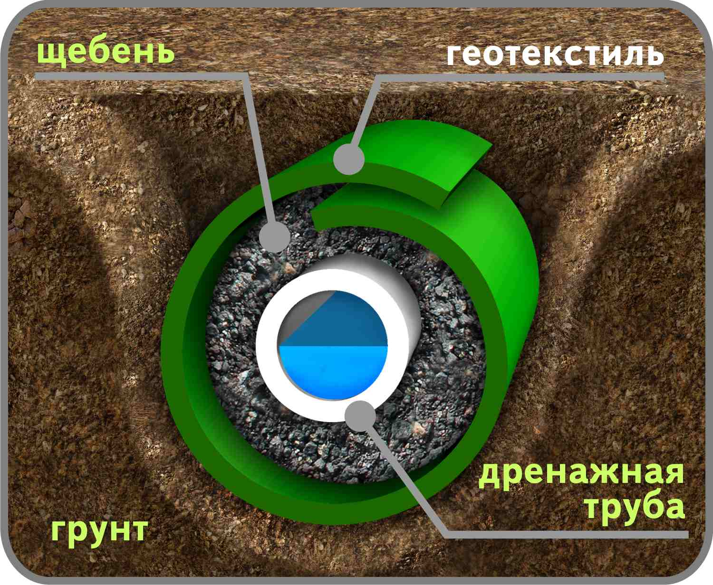
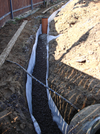
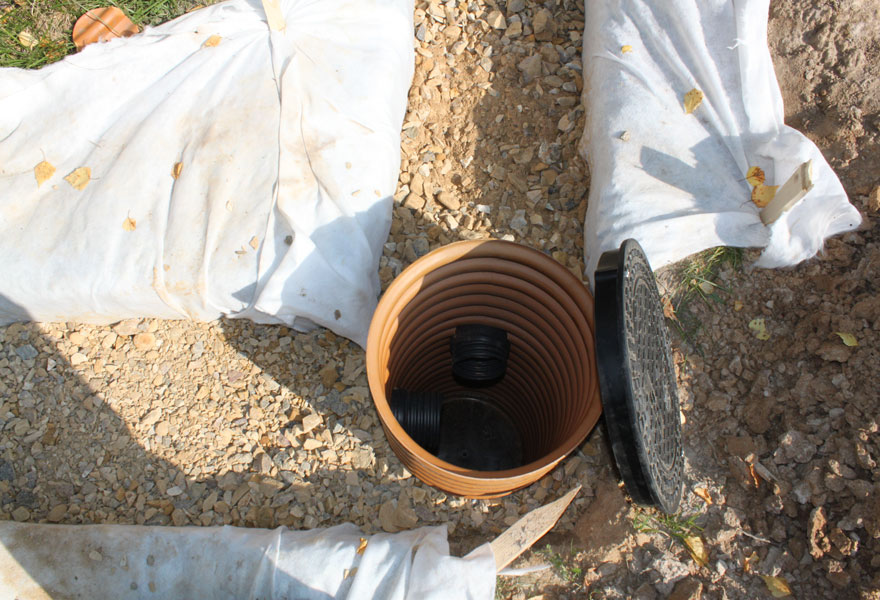

| Дренаж в Чернівцях |
|
На етапі планерування саду і благоустрою ділянки часто виникає питання про необхідність створення дренажної системи і відведення зайвої води. Спочатку визначають рівень ґрунтових вод і рельєф.
Якщо земля на ділянці глиняна, а рівень ґрунтових вод високий, то без дренажної системи не обійтися.
Функції дренажу:
• швидке відведення талих вод, що дозволяє використовувати ділянку вже ранньою весною; • захист підвальних приміщень і фундаменту від надлишку вологи; • зниження фільтраційного тиску на конструкції; • пониження рівня ґрунтових вод; • підтримка доріжок і мощення ділянки в сухому стані; • запобігання загниванню кореневої системи висаджених рослин; • відведення надлишкових вод від тривалих опадів. Залежно від залягання ґрунтових вод, що приводять до перезволоження території, дренаж буває поверхневий або глибинний. Глибинний (закритий) дренаж – є розгалуженою системою підземних траншей. У траншеях використовуються пластикові труби різного діаметру, геотекстильна тканина, пісок і щебінь.

Відстані між траншеями, глибина їх закладки, кут нахилу залежить від механічного складу землі і рівня залягання ґрунтових вод. Ці параметри визначає ландшафтний інженер. Вода по каналах може виводитися як за межі ділянки, так і в певне місце в саду, де влаштовується резервуар.
Поверхневий (відкритий) дренаж – це система комунікацій, розташованих по межі ділянки. 
Вона відносно проста при проектуванні і реалізації, проте справляється лише з деякими завданнями. Відкриті дренажні системи прокладаються таким чином: по периметру викопуються спеціальні канави, їх ширина складає біля півметра, а глибина – 60-70 сантиметрів. Вода, що стікає по цих канавках, збирається в одній, найбільш великій, і відводиться від ділянки. Такі канавки вирішують проблему стоку дощових і талих вод.
Обидві системи можуть застосовуватися на ділянці одночасно в різних варіантах і поєднаннях. При творчому підході деякі елементи дренажу можуть стати декоративними елементами саду і ландшафтний дизайн в цілому буде практичним та довершеним.
|